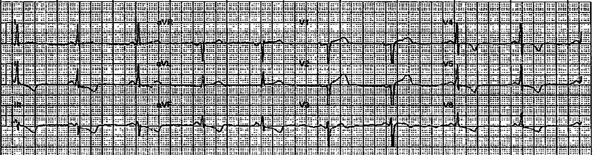
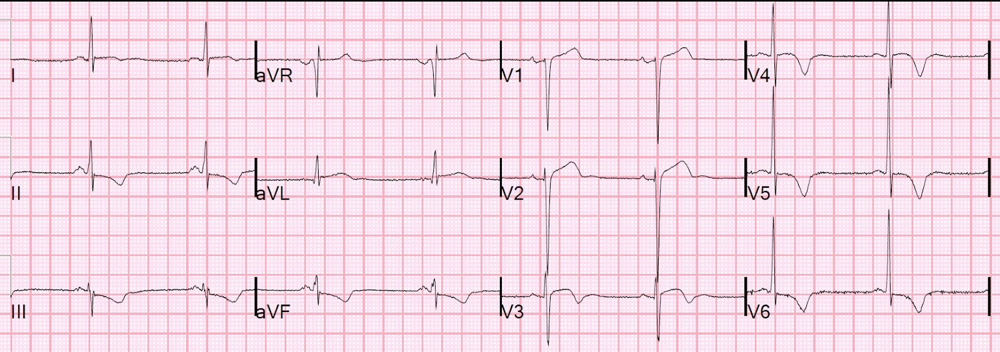
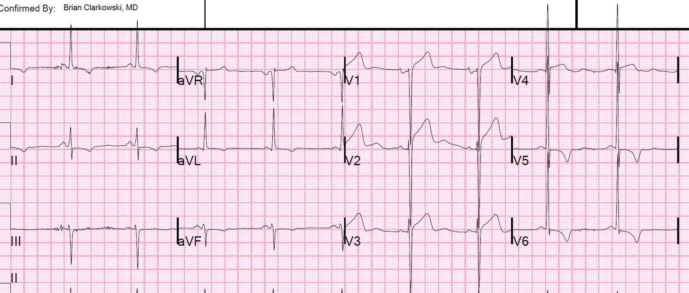
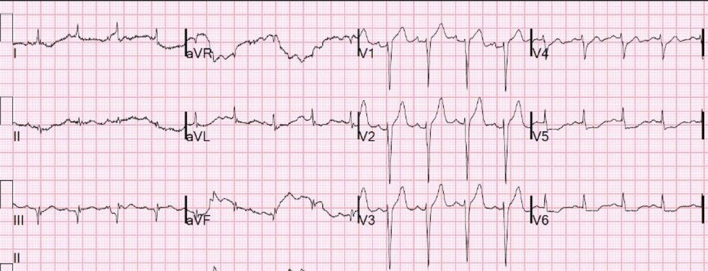
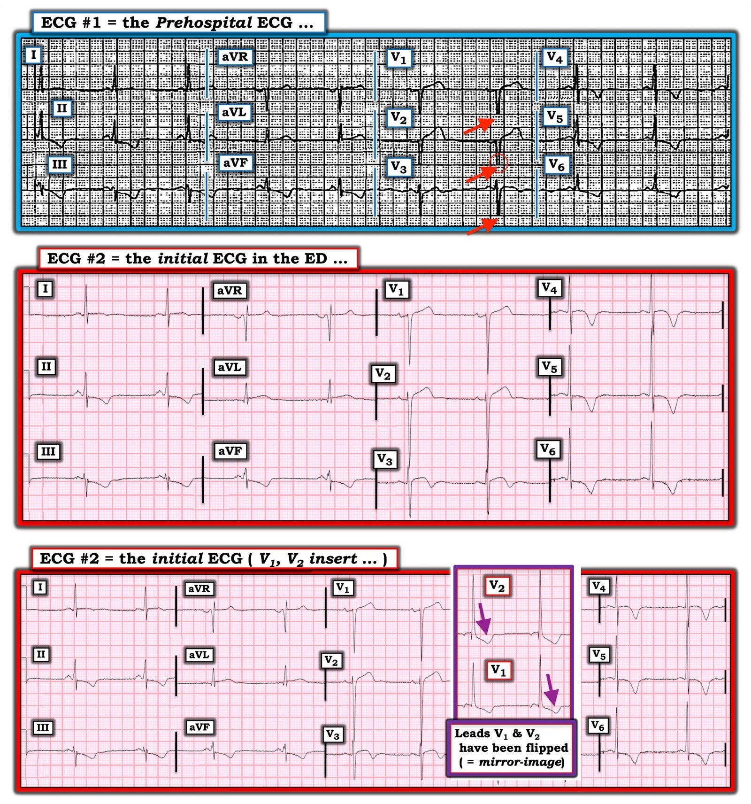

06/02/2020 — Ngất và kích hoạt phòng thông tim trước viện — Bạn nghĩ sao?
Bản dịch tiếng Việt của bài "Syncope and Prehospital Cath Lab activation — What do you think?" – Dr. Smith’s ECG Blog. Giữ nguyên toàn bộ 7 hình ảnh và 1 video của bản gốc.
Một bệnh nhân nam 61 tuổi, tiền sử tăng huyết áp (HTN) và uống rượu (ETOH), xuất hiện đau bụng vùng thượng vị kiểu bóp nghẹt, kèm nôn và vã mồ hôi, sau đó có một cơn ngất kéo dài khoảng 10 giây.
Khi nhân viên cấp cứu ngoài viện đến nơi, bệnh nhân phủ nhận có đau ngực, khó thở hay hồi hộp đánh trống ngực trước cơn ngất.
Họ ghi một điện tâm đồ trước viện, chẩn đoán STEMI và kích hoạt phòng thông tim (cath lab activation) ngay từ trước viện.
Tôi được báo rằng có một ca kích hoạt phòng thông tim trước viện đang trên đường đến.
Bệnh nhân đến nơi và chúng tôi xem điện tâm đồ trước viện:


Có ST chênh xuống ở II, III, aVF
Có ST chênh xuống và sóng T đảo ngược ở V5 và V6
Có sóng T đảo ngược không kèm ST chênh xuống (STD) ở V3 và V4
Bạn nghĩ sao?
Hình ảnh này đáng lo ngại cho OMI thành bên cao (kèm ST chênh xuống soi gương ở các chuyển đạo dưới), và thậm chí cho cả OMI do LAD (ST chênh lên kèm sóng Q ở V1, V2)
Tuy nhiên, tôi nghĩ nhiều khả năng đây là một ca dương tính giả. Tôi luôn cố gắng đến xem các ca kích hoạt trước viện này ngay khi họ vừa đến, dù bệnh nhân có do tôi phụ trách hay không, để xem các điện tâm đồ trước viện, vì chúng thường xuyên là dương tính giả.
Sự kết hợp giữa ST chênh lên ở V1 và V2 với ST chênh xuống và sóng T đảo ngược ở V5, V6 luôn phải khiến bạn nghĩ đến LVH kèm bất thường ST-T mạn tính, ngay cả khi điện thế không đạt tiêu chuẩn LVH (có rất nhiều tiêu chuẩn như vậy vì chúng đều rất kém nhạy và kém đặc hiệu).
ST chênh lên ở V1 và V2 kèm ST chênh xuống ở V5 và V6 là một hình ảnh gặp trong OMI vách (Septal OMI), nhưng nó trông khác với hình ảnh này và không có sóng T đảo ngược sâu ở các chuyển đạo bên.
Tôi đã đặt một ví dụ về OMI do LAD với ST chênh lên ở V1, V2 và ST chênh xuống ở V5, V6 ở cuối bài.
Bệnh sử
Khi hỏi bệnh, bệnh nhân không đau ngực, không khó thở (SOB). Bất cứ khi nào triệu chứng biểu hiện duy nhất là ngất, không kèm triệu chứng nào khác, tôi rất hoài nghi việc tắc mạch vành (OMI) là nguyên nhân. Điều đó chắc chắn là có thể, nhưng xác suất tiền nghiệm rất thấp.
Đau bụng dĩ nhiên có thể là một triệu chứng của hội chứng vành cấp (ACS), nhưng cơn đau này ngắn và dường như đã dẫn đến một biến cố phản xạ phế vị (vasovagal).
Chúng tôi ghi một điện tâm đồ tại khoa cấp cứu (ED):


ST chênh xuống ở các chuyển đạo dưới vẫn đáng lo ngại cho khả năng OMI thành bên cao.
Chúng tôi đã tìm, và tìm được, một điện tâm đồ cũ từ 5 năm trước:


Không có quy tắc nào tốt để đưa ra chẩn đoán này, nhưng ở đây có ST chênh lên 4 mm tại điểm J ở chuyển đạo V2, với sóng S sâu 29 mm, cho tỷ lệ 0.14, rõ ràng nằm trong giới hạn chấp nhận được đối với LVH. ST chênh xuống ở các chuyển đạo dưới là mới, nhưng vẫn có thể là mạn tính, vì điện tâm đồ này được ghi từ 5 năm trước.
Chúng tôi làm siêu âm tim tại giường:
Siêu âm cho thấy phì đại thất trái đồng tâm, chức năng tất cả các thành tốt. Tuy nhiên, rất dễ bỏ sót một rối loạn vận động thành, đặc biệt là rối loạn vận động thành (WMA) ở thành bên cao.
20 phút sau, một điện tâm đồ ghi lại cho kết quả giống hệt.
Troponin ban đầu trả về ở mức không phát hiện được.
Chúng tôi kết luận rằng rất ít khả năng đây là OMI, và cho bệnh nhân nhập viện để loại trừ nhồi máu cơ tim và làm thêm xét nghiệm.
TẤT CẢ CÁC LẦN XÉT NGHIỆM TROPONIN ĐỀU KHÔNG PHÁT HIỆN ĐƯỢC
Đã làm siêu âm tim chính thức:
Phân suất tống máu thất trái ước tính lúc nghỉ bình thường.
Phân suất tống máu thất trái ước tính bình thường, cải thiện khi gắng sức.
Không có rối loạn vận động thành lúc nghỉ.
Không có rối loạn vận động thành khi gắng sức.
Ngày hôm sau, đã làm siêu âm tim gắng sức:
Siêu âm tim gắng sức thể lực bình thường.
Điện tâm đồ gắng sức không có giá trị chẩn đoán.
Bệnh nhân không báo có đau thắt ngực khi gắng sức.
Điện tâm đồ tinh tế điển hình của tắc LAD, trong đó ST chênh xuống ở V5, V6 làm cho khả năng OMI CAO HƠN nhiều (trong khi nếu có sóng T đảo ngược sâu thì lại làm khả năng OMI thấp hơn, và khả năng LVH cao hơn)



===================================
BÌNH LUẬN CỦA TÔI, bởi KEN GRAUER, MD (6/2/2020):
===================================
Tôi rất thích ca này — vì những bài học quan trọng mà nó mang lại về việc Nhận diện LVH trên điện tâm đồ.
- Để cho rõ — tôi đã đặt lại trong Hình 1 điện tâm đồ trước viện ( = Điện tâm đồ #1) và điện tâm đồ ban đầu ghi tại khoa cấp cứu ( = Điện tâm đồ #2). Tôi sẽ giải thích hình thứ 3 trong Hình này ở bên dưới.


SUY NGHĨ CỦA TÔI về ĐIỆN TÂM ĐỒ #1: Với bệnh sử ban đầu ( = nam giới 61 tuổi, tiền sử uống rượu, ngất, và đau bụng nhưng không đau ngực) — tôi nghĩ xác suất một biến cố tim cấp là thấp hơn. Dù vậy, điện tâm đồ trước viện ( = điện tâm đồ #1 trong Hình 1) rõ ràng là đáng lo ngại.
- Như Dr. Smith đã nêu, có một số dấu hiệu đáng lo ngại trong điện tâm đồ #1 — gồm ST chênh lên ở các chuyển đạo V1 và V2 + hình ảnh trông như ST chênh xuống soi gương ở các chuyển đạo dưới và các chuyển đạo ngực bên. Lúc đầu tôi đã nghĩ sóng T ở các chuyển đạo V1 và V2 là sóng T tối cấp — vì chúng rõ ràng lớn không tương xứng và “béo” ở đỉnh so với các sóng S nhỏ một cách đáng ngạc nhiên ở các chuyển đạo này.
- Ghi chú bên lề: Lúc đầu tôi cũng nghĩ khoảng PR trong điện tâm đồ #1 trông ngắn — nhưng khi xem kỹ hơn bản ghi này và các bản ghi sau đó, tôi không thấy sóng delta. Đây không phải là WPW.
CÂU HỎI: VÌ SAO bạn nghĩ tôi đã thêm một số mũi tên ĐỎ vào điện tâm đồ #1?
TRẢ LỜI: Có vẻ như phức bộ QRS đã bị cắt cụt ở 3 chuyển đạo này (và có lẽ cả ở các chuyển đạo ngực bên) trong điện tâm đồ #1. Điều này rõ nhất ở chuyển đạo V2, như thấy bên trong vòng tròn mảnh màu ĐỎ ở chuyển đạo này (Chẳng phải có một khoảng trống giữa nhánh xuống và nhánh lên của sóng S ở chuyển đạo V2 sao?).
- Việc biên độ QRS đã bị “cắt cụt” ở nhiều chuyển đạo ngực là cực kỳ quan trọng cần nhận ra — vì NẾU các sóng S ở chuyển đạo trước thực ra sâu hơn đáng kể so với vẻ ngoài của chúng trong điện tâm đồ #1 — thì các sóng ST-T chênh lên ở các chuyển đạo này có thể hoàn toàn không “không tương xứng” (tức là, các sóng T ở chuyển đạo V1 và V2 có thể không phải là “tối cấp” trong điện tâm đồ #1).
- Theo tôi hiểu, trên nhiều hệ thống ghi điện tâm đồ trước viện — biên độ QRS bị cắt cụt một cách tự động. LƯU Ý: Tôi không am hiểu các chi tiết kỹ thuật của việc ghi điện tâm đồ trước viện như vậy — nên nếu BẤT KỲ AI đọc bài này có chuyên môn và hiểu biết về vấn đề này — XIN hãy viết Bình luận cho chúng tôi!
SUY NGHĨ CỦA TÔI về ĐIỆN TÂM ĐỒ #2: Việc đánh giá điện tâm đồ trước viện ( = điện tâm đồ #1) trở nên rõ ràng hơn nhiều sau khi xem điện tâm đồ ban đầu ghi tại khoa cấp cứu ( = Điện tâm đồ #2). Hãy chú ý biên độ QRS tăng vọt ở tất cả các chuyển đạo ngực trên bản ghi ban đầu tại khoa cấp cứu này!
- Tôi tin rằng sự tăng vọt biên độ QRS trong điện tâm đồ #2 (so với điện tâm đồ #1 trước viện) khẳng định nghi ngờ của tôi về biên độ QRS bị cắt cụt trên bản ghi trước viện!
- Các sóng ST-T nổi bật vẫn thấy ở các chuyển đạo V1 và V2 trong điện tâm đồ #2 — nhưng giờ khi đã thấy sóng S ở các chuyển đạo này thực sự sâu đến mức nào (tức là, 22 mm ở V1 và 27 mm ở V2!) — thì các sóng ST-T ở V1, V2 hoàn toàn “tương xứng” với các sóng S sâu ở chuyển đạo V1 và V2 của điện tâm đồ #2.
- Tiêu chuẩn chắc chắn của LVH được thỏa mãn trong điện tâm đồ #2 (tức là, sóng S sâu nhất ở V1,V2 + sóng R cao nhất ở V5,V6 ở đây là >50 mm, dễ dàng vượt qua tiêu chuẩn điện thế 35 mm cho LVH).
- Sóng T đảo ngược sâu, đối xứng thấy ở mỗi chuyển đạo ngực bên (tức là, các chuyển đạo V4, V5 và V6). Hình ảnh sóng ST-T này ở các chuyển đạo ngực bên của điện tâm đồ #2 phù hợp với “Tăng gánh” thất trái hay thiếu máu cục bộ. Việc hoàn toàn không có đau ngực trong bệnh sử ở bệnh nhân tăng huyết áp lâu năm này gợi ý mạnh rằng, thay vì thiếu máu cục bộ, sóng T đảo ngược đối xứng này phản ánh “tăng gánh” thất trái do LVH nặng.
- Hình ảnh sóng ST-T ở chuyển đạo V3 rất thú vị. Mặc dù có vẻ có ST chênh lên nhẹ với đoạn ST dạng vòm (coved), kết thúc bằng phần cuối sóng T đảo ngược — sóng ST-T này ở chuyển đạo V3 ít có khả năng biểu hiện thiếu máu cục bộ cấp. Thay vào đó, nhiều khả năng nhất đó là kết quả của việc là một “chuyển đạo chuyển tiếp” nằm giữa các sóng ST-T dương và hơi chênh lên ở chuyển đạo V1,V2 — và sóng T đảo ngược sâu, đối xứng ở các chuyển đạo ngực bên V4-V6.
CÂU HỎI — LÀM SAO phân biệt giữa ST-T chênh lên ở chuyển đạo V1,V2 thực sự là tối cấp (tức là, do ACS = hội chứng vành cấp) — với ST-T chênh lên ở chuyển đạo V1,V2 gần như chắc chắn phản ánh “tăng gánh” thất trái do LVH?
TRẢ LỜI — Tôi dùng Nghiệm pháp Soi gương! (Mirror Test) Tôi minh họa khái niệm này ở bản ghi dưới cùng trong Hình 1. Ở đây tôi lấy điện tâm đồ #2 — và thêm một ô chèn trong đó đã lật ngược các chuyển đạo V1 và V2 của điện tâm đồ #2, để cho thấy hình soi gương (mirror-image) của 2 chuyển đạo này.
- CHẲNG PHẢI sóng dương rất cao trong ô chèn, cùng với hình dạng soi gương của các sóng ST-T đã lật ngược này, trông đúng hệt như những gì bạn mong đợi ở các chuyển đạo ngực bên khi có LVH kèm “tăng gánh” sao? (Các mũi tên TÍM ở chuyển đạo V1 và V2 “đã lật” trong bản ghi dưới cùng này chỉ vào hình ảnh giống “tăng gánh” thất trái ở các chuyển đạo này).
- VÌ SAO điều này xảy ra? TRẢ LỜI: Chúng ta quen thuộc nhất với việc chẩn đoán LVH trên điện tâm đồ dựa vào sự hiện diện của sóng R cao ở các chuyển đạo bên, đi kèm với thay đổi ST-T của “tăng gánh” thất trái ở các chuyển đạo bên. Tuy nhiên, một số bệnh nhân biểu hiện thay đổi điện tâm đồ của LVH (và “tăng gánh” thất trái) nổi bật ở các chuyển đạo trước! Chuyển đạo V1 và V2 vừa là chuyển đạo bên phải vừa là chuyển đạo trước. Khi thất trái (LV) to ra — các chuyển đạo bên phải có thể biểu hiện sóng S sâu hơn (đáp ứng với các lực tăng lên ở bên trái). Các sóng ST-T ở các chuyển đạo bên phải V1 và V2 này cũng có thể biểu hiện một hình ảnh “ngược lại” (tức là, soi gương) của ST-T chênh xuống thấy ở các chuyển đạo ngực bên khi có “tăng gánh” thất trái.
- LƯU Ý: Ở bản ghi dưới cùng trong Hình 1 — tôi cho thấy một hình soi gương thực sự của phức bộ QRST ở chuyển đạo V1 và V2 trong ô chèn. Với một chút luyện tập — bạn có thể nhanh chóng nhận ra hình ảnh này (tức là, Bạn có thể học cách “lật ngược” phức bộ QRST ở chuyển đạo V1 và V2 trong đầu) — để nhanh chóng nhận ra LVH kèm “tăng gánh” trông như thế nào ở các chuyển đạo trước.
- Cuối cùng — Một số bệnh nhân biểu hiện thay đổi ST-T của “tăng gánh” thất trái ở các chuyển đạo dưới. Điều này thường gặp nhất khi trục mặt phẳng trán tương đối đứng — nhưng dù trục không đứng trong điện tâm đồ #2 — tôi tin rằng ST-T chênh xuống mà chúng ta thấy ở các chuyển đạo dưới nhiều khả năng nhất là biểu hiện của “tăng gánh” thất trái hơn là thiếu máu cục bộ vì: i) hình dạng của các sóng ST-T ở các chuyển đạo dưới là không đối xứng (tức là, nó đi xuống chậm hơn đi lên) — và, hình dạng không đối xứng này thường gặp nhất với LVH hơn là thiếu máu cục bộ cấp; và, ii) Vì ST chênh lên ở chuyển đạo V1 và V2 của điện tâm đồ #2 là phản ánh của “tăng gánh” thất trái ở các chuyển đạo trước này — nên không có ST chênh lên bất thường nào trong điện tâm đồ #2 (do đó không có vùng tim khu trú nào để ST-T chênh xuống ở các chuyển đạo dưới này là “soi gương” với nó — như người ta sẽ mong đợi nếu nhồi máu cơ tim cấp đang diễn ra).
ĐIỀU CỐT LÕI: Đáng ghi nhớ hình ảnh điện tâm đồ chúng ta thấy trong điện tâm đồ #2 — trong đó LVH nặng kèm “tăng gánh” có thể tạo ra ST chênh lên ở các chuyển đạo trước, kèm ST-T chênh xuống lan tỏa ở những nơi khác mà không phải do một biến cố tim cấp.
- Về một ca khác trong đó ST chênh lên rõ ở chuyển đạo V1 và V2 có thể dễ dàng bị nhầm là thay đổi tối cấp — Xem Hình tôi vẽ trong phần Bình luận của tôi ở cuối bài đăng ngày 27 tháng Mười Hai năm 2018 trên Dr. Smith’s ECG Blog.
- Để biết thêm “Quan điểm của tôi” về chẩn đoán LVH trên điện tâm đồ — BẤM VÀO ĐÂY.
- T.B. (P.S.) — Cũng đáng ghi nhớ hình ảnh điện tâm đồ chúng ta thấy trong điện tâm đồ #1 — trong đó việc không nhận ra biên độ QRS đã bị “cắt cụt” trên điện tâm đồ trước viện này có thể dễ dàng dẫn đến nhầm lẫn các sóng ST-T ở chuyển đạo V1 và V2 là tối cấp.
Chúng tôi xin CẢM ƠN Dr. Smith vì đã trình bày ca bệnh đầy tính giáo dục này!